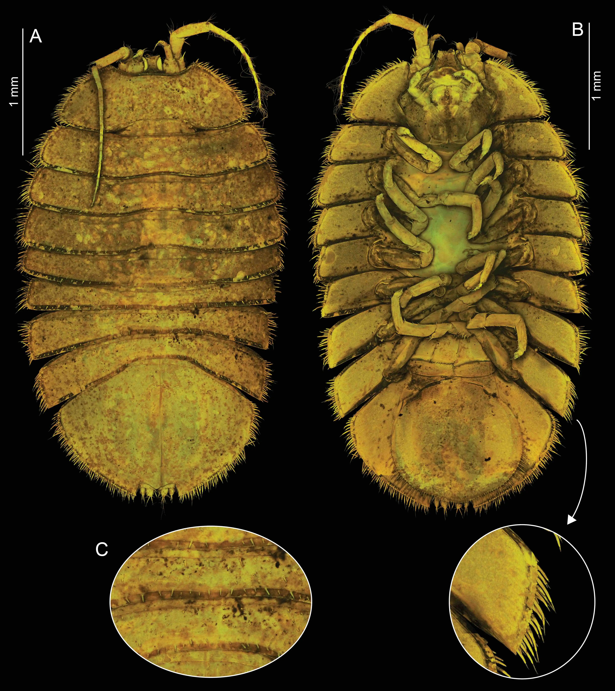

New and Old Isopods
New speices under a new genus
A new isopod species was discovered at the Nidhogg chimney (3016 m) in the Jøtul vent field and the deep-sea Amundsen Basin (4156 m) in the Artic Ocean. Based on the morphological and molecular evidence, a new genus will be erected including the previouslz described Jaera tyleri Malyutina & Brandt, 2014. Both species from the newly erected genus share a set of traits, that significantly differ from the rest of the typically shallow-water Jaera species. Two of such characters stood out: they were both sampled at abyssal depth, and presumably both feed on bacteria. While J. tyleri was collected on whale bones and grazing on the bacterial community on the bones, the new species were found at an active hydrothermal vent site and presumably feeds on the chemosynthetic bacteria.

The necessity of a taxonomic revision of Jaera Leach, 1814 has already been recognized, as well as the enclosing family Janiridae G.O. Sars, 1897, which is proven to be polyphyletic. This study contributes the first step in resolving the systematics of these groups and our understanding to the ecology of isopods inhabiting chemosynthetic environments.

Disconectes coxalis Kussakin, 1983
Disconectes coxalis was officially described by Kussakin in 1983, but the type materials was lost later. Adding to the only four individuals collected from Canadian Basins from 3100 to 3400 m depth, approx. 70 specimens of this species were collected at the Eurasian part of the Arctic Ocean during the ArcWatch-1 expedition onboard RV Polarstern, exactly 40 years after the species was described. The newly collected specimens will be used for the re-description along with molecular data.
Although being sampled in the central Arctic Ocean, this species has not been found elsewhere, particularly at the Hausgarten LTER in the Fram Strait, which represents the only deep channel connecting Arctic Ocean with other Ocean sectors. Based on this, D. coxalis are suggested to be endemic in the Arctic.